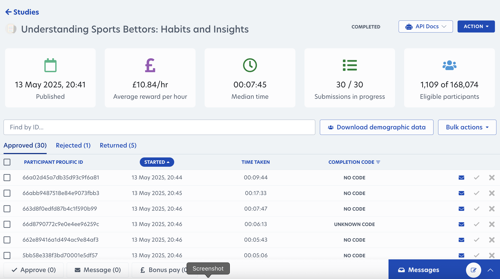

It began as a typical afternoon conversation with my mentor, who I respect a lot. We started with small talk, moved into career and life, then into sports, golf, and eventually sports betting. As we talked, the role of AI kept coming up. It was clear that AI was changing how games are played, how they are analyzed, and how bets are placed.
That evening I decided to look into how people research bets, and since the playoffs were on, I figured I would try placing one for myself, it seemed like a fun idea and a way to keep things interesting. I opened a few third-party, betting research sites and was met with endless pages of numbers, odds, and statistics. The volume alone was enough to push someone away.
If the process shut me out, it was shutting out countless others.
Betting Research Apps
What I found was that following your gut was simple. Placing a quick bet took no effort. But the moment you wanted to back up your decision with real research, things became complicated. As a new bettor, it felt intimidating. You had to bounce between third-party sites, learn unfamiliar terms, compare stats, and search for the best odds. Even after all that, you still had to return to the sportsbook, track down that exact bet, and only then could you place it.
When I tried large language models like ChatGPT and Perplexity, I noticed they already did a good job of covering the basics. They explained terms, summarized stats, and answered broad questions. They even provided you with the odds. The gap was not in what AI could provide but in how scattered the experience felt. Users still had to switch between sites, double-check data, and then return to the sportsbook on their own.
That was the moment I saw the opportunity: to connect those steps into one clear path. Instead of making users stitch research together, why not guide them from verified data and odds all the way to the sportsbook page where the bet is placed?
What if finishing research meant landing directly on the sportsbook showing the bet?
Betbot User Journey
Week 2
Market Validation & User Journey
After mapping the user journey, I wanted to see whether this friction was just a minor annoyance or something that actually shaped the experience. To dig deeper, I reviewed sportsbook apps and third-party betting tools. What I found generally fell into two extremes:
Some apps pushed unsolicited betting picks, generated by their own algorithms, regardless of user intent.
Others overwhelmed users with endless stats and trends—useful in theory, but difficult to interpret or act on.
AI-driven flows weren’t much better. A typical pattern looked like this:
You ask a simple question and receive text blocks with odds, stats, and a short summary.
You then have to remember the answer, switch to the sportsbook, search for the right odds, and finally locate and place the bet yourself.
At first, I cast my net too wide. I compared everything from poker platforms to esports apps. The scope became blurry, and honestly, it made me doubt the idea. But once I narrowed down to a single sport, the picture became clearer. Focusing on one league gave me structured data, a defined season, and enough volume to test the concept without overwhelming the MVP.
What stood out: New bettors want tools that help them make choices without sorting through pages of stats. They need clear answers they can act on. Sportsbooks spend millions to bring these users in, so it’s in their interest to make the experience easier to use.
User Research
Then, I started surveying potential users. I focused on the NFL since it has the largest betting market in the United States and offered a wide pool of people to survey. To recruit participants, I used a third-party platform called Prolific, which let me filter down from a broad audience to a targeted group of NFL sports bettors. On May 13, 2025, I collected 30 qualified responses from experienced bettors in the United States and Canada who watch sports daily or weekly.
Participants were men between the ages of 22 and 55, with an average age of 38. Most identified as White (24), with smaller groups identifying as Black (3), Mixed (2), and Asian (1). Nearly all lived in the United States (28), with 2 from Canada. All spoke English, most worked full-time (25), and four were students.
Participant Demographics
Total participants: 30
Age: 22–55 (average 38)
Gender: All identified as men
Ethnicity: Majority White (24), with smaller groups identifying as Black (3), Mixed (2), and Asian (1)
Country of residence: Mostly United States (28), with 2 from Canada
Employment status: Primarily full-time (25), with a few unemployed (1) or other (1)

Prolific Survey Platform
What I Learned
The data showed clear patterns:
Betting frequency is high. 66% of respondents place bets at least once a week, and 41% do so a few times a week. This means Betbot needs to support fast, repeatable flows — bettors don’t have time for long research cycles every time.
Football and basketball dominate. Almost every respondent follows NFL/NCAAF (94%) and NBA (91%), with baseball (63%) and hockey (44%) coming second. This confirmed that starting with football and basketball first made sense for scaling.
Stats matter, but transparency matters more. On average, bettors rated stats a 6.4/10 in importance, but 59% said they want a second opinion and 69% said clear explanations boosted their confidence. Bettors don’t just want numbers — they want reassurance.
Top frustrations were trust. People complained about research taking too long, data being scattered, and not knowing which stats to trust. Many also said they wanted transparency in how picks were made, and a record of reliability.
For the MVP, Betbot will focus solely on football before scaling to basketball and other sports.
The overall flow should remain as simple yet informative as possible, with easy-to-eye UI elements and components.
Each bet option/component will include a clear “why Betbot thinks this is a good or bad idea,” backed by a short explanation and verified sources for transparency.
Lesson learned: Bettors are information-hungry but trust-challenged. They want research that is fast, reliable, and ends in a bet they feel confident placing.
Week 3
Design & Prototyping
I built the first mockups in Figma and tested them with my PM and a few friends. The reaction was the same: the app felt crowded and confusing. This was not what we wanted to build. It looked more like another research tool full of charts and scattered information, exactly what we wanted to avoid, and too close to what competitors were already doing.
Early Mockups / Concept:
Early Mockup
Early Component Design
Early Mockup
Quick Figma Prototype
Even though we were happy with the visual outcome, user feedback pushed us to rethink the approach. Testers felt overwhelmed by the sheer amount of information, which showed us that; More features don’t automatically translate to better UX.
We realized we weren’t aiming to build another complex dashboard. This was the opposite of the problem we set out to solve. We wanted something that felt simple and direct. That’s when we shifted to a chat-first model. Instead of dumping data, the app would answer questions in a conversational flow, with extra, interactive details when the user asked for them.
At the same time, we narrowed our audience. Our competing platforms served professional bettors who wanted deep stats and probability models. Our research showed us the opportunity was with new and casual bettors and sports fans who bet regularly but don’t want to get lost in spreadsheets.
We now had a foundation solid enough to start our development:
Updated Interactive Prototype
After switching to this model, the app became lighter and easier to use. Testers said it felt more approachable and less like work. The flow went from ‘ask a question → drown in data’ to ‘ask a question → get a clear answer first, then expand if needed.’
To keep the MVP lean, we paused on features like the betslip optimizer/editor tool and concentrated on delivering accurate information above everything else.
But a new challenge came up: users asked,
How is this different from other AI chat platforms?
Claude Dashboard UI
Betbot Dashboard UI
The difference was in the flow. AI chat tools did give answers, broad, but still answers. That was our main struggle: we were competing with AI giants who could already provide some information.
Betbot stood out by linking users straight to the sportsbook bet page for the user's desired picks, paired with a hyper-focused sports betting design and helpful interactive data components/visuals.
Lesson learned: Competing with AI giants taught me that design alone isn’t enough. I was intimidated at first, but I realized there’s always space if you carve out a niche and show clear purpose.
Week 4–5
MVP Build & Iteration
So I have started as the only visual, product designer in this project. I was basically tasked with providing quick concepts, testing them out & iteration. Building basic interactive prototypes & test flows.
But then things didn’t work out and our only Developer changed his mind and left.
Since we were bootstrapped and lean, we couldn’t offer him much to stay. The reality hit us hard: either find a way forward or end the project. I decided to push on because I wanted to see if this idea could go somewhere. We reached out to developers, but it was difficult to bring anyone on. People can’t afford to work for low pay, and that’s very much understandable.
After a long conversation with my PM, we decided to look into low-code AI-powered app builders & tools. Neither of us was very technical, but I had some frontend coding experience and a basic understanding of how web apps worked. So after a long discussion, we decided I would also take on the responsibility of developing the app. And it was scary.
I started out by researching low-code AI tools with my limited coding knowledge. I tried a few AI developers like Lovable and Bolt, but eventually decided to use Replit. It had its own challenges compared to the others. It was less “low-code” and required more technical work, but it offered a stronger backend structure and a more capable AI agent.
I committed to Replit and moved into development.
I spent the first few very stressful days learning how to integrate an LLM, make API calls, manage messages, and structure prompts. By the end, I built a working AI-powered core feature, though the UI was rough.
Initial Replit Betbot Snapshot
From there, I began piecing things together, composing multiple AI tools, doing constant research, asking questions, and reaching out for help when I was stuck. The process was very stressful and full of long nights, but eventually, I managed to build our working MVP.
What the MVP Included
A chat-first flow where users could ask betting-related questions.
Dynamic components that surfaced comparisons, player stats, and odds.
Direct sportsbook linking that turned research into action.
Even without a dedicated developer, we could still bring the vision to life. It proved the concept was real, and that gave us the confidence to keep going.
Lesson learned: Asking for help is part of the work, and it was what kept momentum going. Which was critical to our project. I couldn’t have built the MVP without reaching out for help and keeping up the momentum to move the project forward.
Closing Thoughts
Reflections and next steps
This project began with a simple problem: sports betting can be overwhelming. By focusing on clarity, we built an MVP that stripped away noise and gave users a direct way to conduct their basic research (compare odds, stats, and trends and more...). And once they are happy with it, a seamless experience helping them place their bets. The process showed me that real progress came from supportive collaboration and consistent forward motion, not from chasing perfection. Building the MVP required reaching out for support and keeping our momentum moving at each step.
What we built is a starting point, not a finished product. Betbot won't ever be perfect and we will continue to iterate, but it proves the idea has value and room to grow.
Visit Prototype
Check out the initial prototype & the final product.